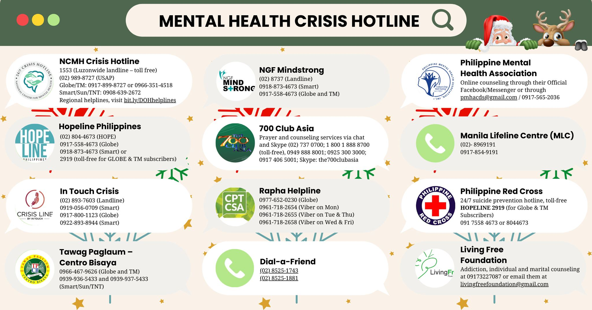

Appointment Scheduling
Students can easily schedule, reschedule, or cancel appointments with counselors based on real-time availability.
A secure, web-based platform designed to enhance the Guidance Counseling Service Office (GCSO) at Romblon State University. Providing students with confidential, accessible, and efficient mental health support services.
Designed to support student mental wellness and counseling efficiency
Students can easily schedule, reschedule, or cancel appointments with counselors based on real-time availability.
Confidential chat and video call system for private communication between students and counselors.
Informational questionnaires to help students gauge their current well-being and track progress over time.
Secure reporting system for bullying, harassment, or sensitive concerns with immediate counselor notification.
Curated collection of mental health resources, articles, and self-help materials accessible anytime.
Counselors can monitor student progress, session history, and maintain organized records efficiently.
Guiding principles behind the RSU Safespace platform
To develop a secure, user-friendly web-based platform that enhances the accessibility, efficiency, and effectiveness of the Guidance Counseling Office (GCSO) at Romblon State University. We aim to provide students with confidential access to mental health support while empowering counselors with tools to manage services effectively.
To become the leading digital mental health support system within RSU, creating a stigma-free environment where every student feels safe, heard, and supported in their mental wellness journey. We envision a campus community where seeking help is normalized and accessible to all.
If you or someone you know needs support, please reach out to these trusted hotlines.

On a phone the numbers are small. Open the full-size list to read and zoom. Open the hotline list full size
Photo and video highlights from the Guidance Counseling Service Office
Empowering students and counselors through digital guidance and mental wellness support.
RSU Safespace is a web-based platform developed by BSIT students of Romblon State University to enhance the Guidance Counseling Service Office (GCSO) through digital innovation. The platform provides students with confidential, accessible, and efficient mental health support services, while empowering counselors with tools for appointment management, secure messaging, and progress tracking.
We are committed to fostering a stigma-free environment where every student feels safe, heard, and supported in their mental wellness journey. RSU Safespace is designed to make seeking help easy, private, and effective for all members of the RSU community.
The team behind RSU Safespace
Leader / Lead Programmer (Student Portal)
BSIT 4A
Lead Programmer (Counselor Portal)
BSIT 4A
Programmer (Admin Portal)
BSIT 4A
Assistant Programmer (Admin Portal)
BSIT 4A
UI and UX Designer
BSIT 4A
Adviser: Daryl M. Factor